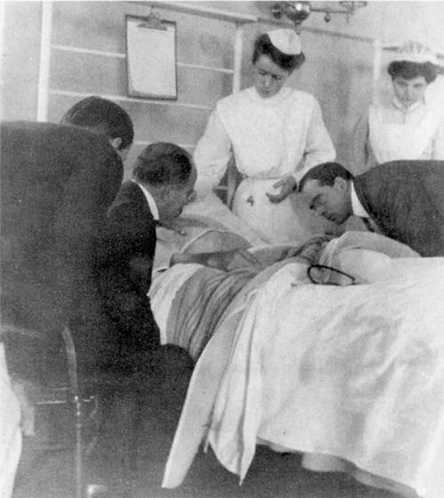
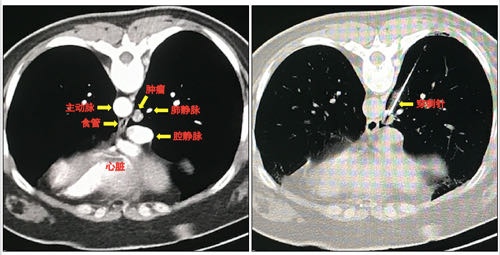

你好，欢迎来到《医学通识50讲》，我是薄世宁。
每个医生在上医学院的时候，都有读不完的书，而且都是大部头：生理、生化、解剖、组织胚胎、微生物、内、外、妇、儿、皮肤、性病、眼科等等。
有多少呢？把这些书摞一块，肯定比几个人的身高加起来还高。
但是学了这么多理论，就会看病了吗？
理论和现实永远不一样。如果在火星上让种子发芽，长成植物，就可以通过光合作用产生氧气，那么咱们就可以移民火星。理论上可行吧？
但是，现实呢？不行。
《火星救援》这个电影毕竟是科幻。要想接近现实，就必须一代一代的人不断尝试。这就是实践。
实践是理论和现实之间的桥梁。临床医学更是如此，实践是临床医学的核心理念。
奠定现代医学教育基础，用实践理念去培养年轻医生的人，就是这节课要说的医学教育家——威廉·奥斯勒医生。他被称为“现代医学之父”。
奥斯勒的名字可能你不熟悉。那你一定听说过美国的约翰·霍普金斯大学医学院，这是全世界最好的医学院之一，我们课程顾问团的任添华医生和冯雪医生，都在这个学校学习过。
约翰·霍普金斯有多牛呢？
它曾经连续22年蝉联全美医学院排名第一。它有17位诺贝尔生理学或医学奖获得者，16位美国科学院院士。
奥斯勒医生就是这个医学院的奠基人之一。这个学校的教育模式，就是源于奥斯勒的设想。
有人说，美国成为医学强国，医学教育模式功不可没。
这节课，我们不谈奥斯勒医生在医学上的重要发现，也不说他的职业精神和人格特质，我们只说他如何用实践理念培养年轻医生。
奥斯勒的“床边教学”
1849年，奥斯勒出生在加拿大。后来他来到美国，先后在宾州大学医学院和约翰·霍普金斯大学医学院担任医学教育管理工作。
他意识到，北美当时的医学教育体系存在很大弊端。
就是我们最开始提到的，医学生在医学院学的知识、理论，到了医院不能直接运用。在学校和医院之间有一条巨大的鸿沟，这显然不利于年轻医生的成长。
奥斯勒潜心研究，到底什么样的教学模式，适合医学这个特殊的行业呢？
说它特殊，是因为医学和任何科学都不同。
医学面对的是活生生的人，每个病人都不同。而且，即便是同一种病，不同的人用同一种治疗方法，用同一种药，效果也不一样。医学充满着不确定性。
所以，如果医学生大学毕业以后，直接去用一套生硬的理论去医院当医生，是不可能服务好病人的。
奥斯勒是怎么解决这个问题的呢？
首先，医学生在医学院上学的时候，就开始进入临床实习。
这就是奥斯勒的“床边教学”。到病房里去学习、实习，边学习理论边实践。天天和病人在一起，想不成长都难。

奥斯勒经常说：
只有反复实践，见多识广，才可以在不确定的临床医学面前，给病人最好的治疗。
其次，如果医学生毕业之后，直接分配到不同水平的医院，那么他们今后的技术和能力势必发展也不同。水平有差异的医院，很可能会影响这些年轻医生的发展。
所以，医学生从医学院毕业后，继续规范化培训。
让年轻医生具备了标准化的能力之后，再开始服务病人，是对自己负责，对病人负责。这就是目前全世界很多国家施行的住院医师规范化培训制度。
就拿咱们国家来说，医学生从医学院毕业之后，要想当医生，先要在国家规定的、具有培训资格的大医院进行三年的住院医师规范化培训。
在美国，内科系统要培训3-5年，外科系统要培训5-7年。
这些医生几乎是吃住在医院。不仅要培训医学知识、病人管理能力、沟通技巧、实践技能、多学科协作能力，还要培训科研能力、教学能力和职业精神。
只有经历过这样的训练和实践，才能成为合格的医生。中国的住院医师规范化培训就是部分参考了奥斯勒医生提出的培训制度。
奥斯勒终生都在推行他的“床边教学”和用实践去培养医生的理念。
每个领域的医生都在体系化的医学教育模式下，在实践的理念下不断成长。下面通过两个病例，看看实践在临床工作中的重要作用。
从“瘾君子”诊断艾滋病
第一个病例，来自美国哥伦比亚大学的悉达多·穆克吉医生。
一个中年男性，因为体重快速下降、虚弱、乏力来就诊。
一般情况下，如果同时出现这几个症状，医生会首先考虑癌症。
所以，穆克吉给病人做了全面、详细的检查。抽血、CT、超声，甚至胃镜、肠镜，全部检查都做了，仍然诊断不清这个病人到底是什么病。
诊断陷入僵局。
有一天，穆克吉路过咖啡厅的时候，不经意往里看了一眼，他看到这个病人正在和一个瘾君子亲密交谈。
他回到医院，立刻给这个病人做了艾滋病的检查，结果是阳性。这个病人是艾滋病患者，艾滋病导致了他所有的症状。
讲到这，你可能就有疑问了，为什么病人和吸毒的人聊天，就怀疑艾滋病呢？
因为很多吸毒的人有共用注射器的现象，这样很容易互相传播艾滋病。
艾滋病早期就有疲乏、食欲下降、消瘦的表现。这个病人和瘾君子走得这么近，那么他很可能也吸毒。
所以，实践经验告诉穆克吉要这么做，结果证实了他的判断。
这个病例不是要说明穆克吉医生有多牛，而是说在诊断阶段，实际情况远比理论复杂得多。
理论上只要符合“1、2、3”，那么就能诊断。但是现实中没有清晰的线索用于诊断，需要医生去挖掘、梳理。
人性的因素也远比我们想的复杂。因为各种原因，有些病人会隐瞒病情，有些病人会故意隐瞒性倾向，隐瞒心理问题，隐瞒家族史、接触史，隐瞒病情的真正原因等等。
甚至，医生在诊断过程中搜集到的信息和指标也可能会相互冲突、相互矛盾，客观检查的数据指标也可能并不是完全一致。
临床医学充满了不确定，没有任何一个公式可以套用在任何一个病人身上。
穆克吉医生的这个病例说明，医生诊断需要剥丝抽茧，挖掘现象背后的本质，找到关键证据。这离开丰富的实践经验是不可能做到的。
实践，搭起了理论和诊断之间的桥梁。
“针感”从实践得来
对于治疗，就更是如此了。下面我讲第二个病例。
对于某些能在CT上看到的小结节，有的时候需要穿刺活检，明确它的病理性质，这样就可以增加诊断的正确率，对于指导治疗也非常有帮助。
但是人是一个活体，每个结节生长部位不同，穿刺难度也不同。比如肺里的结节还会随着呼吸和心跳产生移动。能看到的，未必能够穿到。
下面这张图，就是CT片子上显示的肺部结节。

这个结节位置很深，如果长在肺的边缘，很多医生都可以穿刺成功。
但是这个结节长在肺内非常深的位置，而且最难的是，它不仅会随着呼吸移动，它还紧邻主动脉。穿刺的时候，如果病人剧烈咳嗽，或者医生的手稍微一抖，那么你肯定知道结局。
理论上需要穿刺，但是现实中找谁操作呢？
这个时候，任何理论都只能是基础了，必须寻找一个有丰富的实践经验，并且能够安全穿刺的医生。
这个61岁的病人到北京大学肿瘤医院找到了柳晨医生。医学界有人把柳晨称为“中国穿刺第一针”、“针尖上的战神”，只要是影像上能看到的结节，柳晨就能穿刺。
他实习在北大医院，毕业后到北京大学第三医院做放射科医生。他几年内读过几万张影像学片子，每天不断地实践。每一个结节在穿刺之前，他都能立刻在大脑中构建出这个结节的三维空间位置、结构，以及穿刺路径。
实践让他的治疗技术不断提高。后来，他被人才引进到北京大学肿瘤医院介入治疗科。他一天都没有离开过临床，没有离开过实践。
柳晨医生经常对其他医生说，“穿刺靠的是实践，靠的是在大脑中本能形成的三维立体图像，靠的是“空间感”和“针感”，也就是穿刺过程中穿刺针穿过不同组织，传递到手心的感觉。”
病人躺在手术台上，柳晨认真地叮嘱了病人，“千万别咳嗽，你坚持一下，我一定帮你穿刺成功。”
在CT引导下，柳晨慢慢进针，针尖逐步深入，就像带了一个导航一样，准确无误地刺进了这个几乎没人敢穿刺的小结节里。
这一针，我用八个字形容——百步穿杨，不失毫厘。
今天哪项治疗技术，不是建立在理论和实践的基础上呢？
比如，断肢再植。要在显微镜下精细地缝合血管、神经、组织，还要保证缝合后的血运，避免缺血时间过久。这离开实践行吗？
再比如，心脏搭桥手术。取一段其他位置的血管，在尽可能短的时间内，精确跨过病变血管，进行“确切吻合”，这离开实践行吗？
现代医学以理论为基础，以实践作为核心理念。医生经过不断地实践，最后成为病人健康的服务者与提供者。
奥斯勒医生70岁的时候死于肺炎，按照他的遗愿，奥斯勒的遗体供年轻医生解剖。这是他为培养年轻医生，做出的最后努力。
奥斯勒说：“就我个人而言，我这辈子最骄傲的，就是把临床体系与学院的实习教学结合起来。我的墓志铭不要别的，只说我在病房中教导学生即可。因为到目前为止，在我的心目中，这是我做过最有用、最重要的事。”
下节预告
医疗的禁区是如何一个一个被打破的？下一讲，我们介绍打破心脏禁区，把导管插入自己心脏的人——福斯曼。